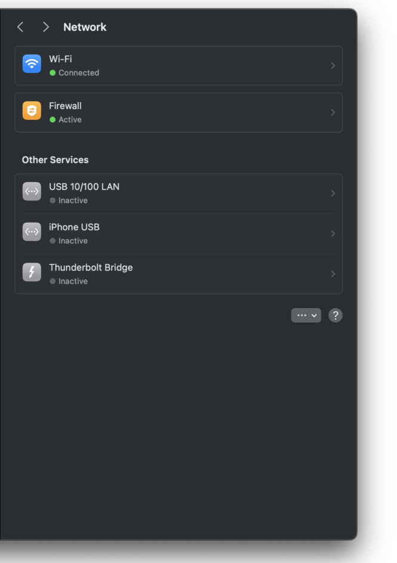

As Apple’s M1/M2 processors got significant attention lately, different users reported significant stability issues & network performance issues, specially when using Wi-Fi on the 2.4 GHz band or connecting via a USB dongle for LAN.
One common complaint is sudden long drops in transfer rates, often resulting in frustrating experiences for users. These issues can be attributed to the design of the network card in these devices, which may struggle to maintain consistent performance under certain conditions.
When operating on the 2.4 GHz band, devices with M1 or M2 processors may experience very low transfer rates like 0.5 mbps transfer rate 😱, significantly lower than expected, not all the devices are necessarily affected, but a lot of complaints about this can be found.
I had a connection about 30 times faster when connecting through my macbook pro 2019 than M1 Pro, simple benchmarks using networkQuality command.
**M1 Pro based internet speed
**Downlink: 0.568 Mbps, 31 RPM - Uplink: 1.920 Mbps, 36 RPM
_
**Intel based internet speed
**_Downlink: 14.347 Mbps, 63 RPM - Uplink: 4.175 Mbps, 47 RPM
Such results were shocking to me 😱, maybe you are also in shock to the 15 Mbps speed of mine as I don’t have fiber-internet where I live and still on 4G. 🤣
In the beginning I was suspecting that the VPN/MDM on the M1 Pro to be why I have sudden significant long speed drops, but after doing some research I found some useful findings that helped me retrieve the speed back on M1 Pro device.
The 2.4GHz band offers a better coverage and penetration through walls. However, it is more suspectible to interference from other devices & nearby Wi-Fi networks. This can potentially lead to congestion and speed drops, especially in crowded areas. On the other hand, the 5GHz band is generally faster and is less susceptible to interference. However, it has a shorter range and may have more difficulty penetrating objects.
Connecting to a LAN via a USB dongle (specially with a monitor on the same dongle) is also reported to lead to network performance issues, further complicating the challenges faced by users relying on a stable and high-speed network connection.
While these problems may seem daunting, there are potential workarounds and solutions that users can consider.
1- When troubleshooting network performance issues on devices with M1 or M2 processors, utilizing the “networkQuality” command in safe mode can be a valuable diagnostic tool. By entering safe mode, the system loads only essential components, allowing users to isolate potential software conflicts or third-party applications that may be impacting network performance. Running the “networkQuality” command in this environment can provide a clearer picture of the device’s network status.
This can help narrow down the potential sources of the issue, whether it’s related to software conflicts, driver issues, or other factors. By leveraging safe mode and the “networkQuality” command, users can gather crucial data to aid in the debugging process and work towards resolving network performance issues effectively.
2- Switching to the 5 GHz band and disabling the 2.4 GHz network on your router can be an effective strategy for addressing performance issues associated with the 2.4 GHz band. Along with using 40MHz channel width, you can potentially mitigate the impact of congestion and interference, resulting in improved network performance.
This simple change can often make a noticeable difference in the overall reliability and speed of the Wi-Fi network for devices with M1 or M2 processors.
3- If you find yourself using a USB-C dongle for network connectivity using LAN and you are experiencing network issues, it may be worth considering a switch to Wi-Fi as an alternative. By transitioning to Wi-Fi, you can assess the network quality using “networkQuality”, This approach allows you to compare the performance of the USB-C dongle with that of the Wi-Fi connection, potentially identifying any specific issues related to the dongle or the network environment.
4- disable needless network features such as “Thunderbolt Bridge” which is a networking technology that allows for high-speed data transfer between two Mac computers using Thunderbolt ports. Consider disabling this feature and other features that you don’t use, disabling these is reported to solve the issue.

It’s important to be aware of these potential network performance issues when using devices with M1 or M2 processors. some devices could be not affected by these issues, but I saw a lot of people complaining about the same, I hope this information proves helpful to those navigating network performance issues on M1 and M2 powered devices.